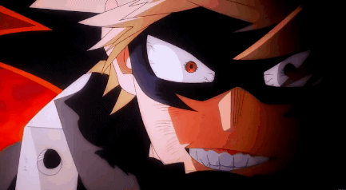

Su informacion principal
Nombre: Katsuki Bakugo

Quirk: Explosion
El Quirk de Bakugo le permite segregar sudor hecho de nitroglicerina en sus manos y pudiendo hacerla explotar cuando quiera.
Wiki con informacion mas detallada de Katsuki Bakugo